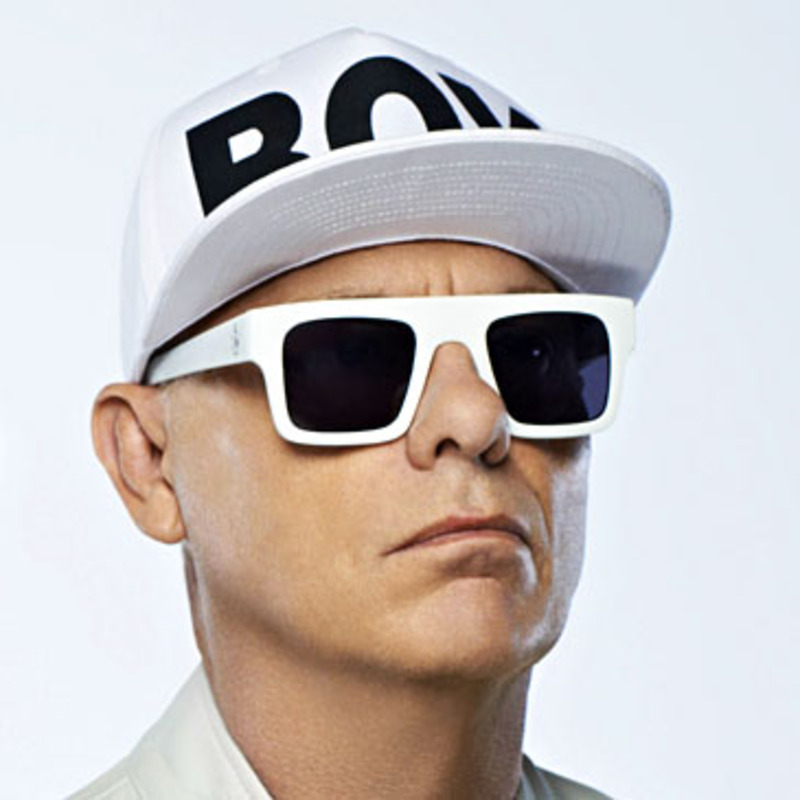

Neil Tennant

Información personal
Educación
Información profesional
Currículum Vitae
Ver
Biografía
Neil Francis Tennant (North Tyneside, 10 de julio de 1954), conocido como Neil Tennant, es un cantante y compositor británico, integrante, desde 1981, del dúo de synth pop Pet Shop Boys, junto a Chris Lowe.
Infancia y juventud
Neil fue el segundo hijo de los cuatro que tuvo el matrimonio formado por William W. Tennant (1923–2009), agente comercial, y Sheila M. Watson (1923–2008). Tiene una hermana mayor, Susan, y dos hermanos menores que él, Simon y Philip. Se trataba de una familia católica británica cuyo sentido de la humanidad, según reconoce el cantante, se ha traslucido en su trabajo. No será la misma, sin embargo, su relación con el “catolicismo oficial”.
A los ocho años, era monaguillo en su parroquia y formaba parte del coro, que cantaba en latín. Para la enseñanza secundaria, sus padres le matricularon en el St. Cuthbert's Grammar School, un colegio católico masculino de Newcastle-Upon-Tyne (donde también estudió Sting). Allí conoció al que sería su mejor amigo, y con el que, junto a dos chicas, formó su primer grupo musical (Dust), que era un grupo folk inspirado en la Incredible String Band. Tenían entonces 16 años, y Neil había aprendido a tocar la guitarra y el chelo. Años más tarde, en 1986, su amigo sería diagnosticado de SIDA, y Neil escribiría la canción “It Couldn’t Happen Here” (Actually, 1987) recordando la relación que los unió durante la adolescencia. Después le dedicaría otras dos canciones: “Being Boring” (Behaviour, 1990), que es la descripción de una fiesta en la que estuvieron, y “Your Funny Uncle” (cara B del sencillo It's Alright, 1988), sobre su funeral.
Ver más
En cuanto a la educación recibida en St. Cuthbert's Grammar School, no le dejó buen sabor de boca. Los temas "This must be the place I waited years to leave" (trad. “Este debe ser el lugar que tanto esperé para abandonar”; Behaviour, 1990) y "It's a Sin" (trad. “Es pecado”; Actually, 1987) hacen referencia a su estancia en esta escuela. Esta última canción contiene una crítica vehemente a la educación religiosa allí recibida: “Cuando miro hacia atrás en mi vida / siempre es con sensación de vergüenza / (…) todo cuanto hice / todo cuanto hago / (…) es pecado. / En la escuela me enseñaron a ser / tan puro en pensamiento, palabra y obra / no tuvieron éxito”. Sin embargo, Neil le quita importancia al asunto: «La gente se la tomó muy en serio. La escribí en 15 minutos, no pasaba de ser una “broma de campamento”, no fue algo que hiciera conscientemente en serio. (…) El párroco de Newcastle pronunció un sermón sobre ello, reflexionando sobre cómo la Iglesia había cambiado pasando desde la amenaza con un infierno terrible hacia el mensaje de amor».
Aunque Neil comenzó a componer canciones a los 14 años, no será hasta los 32 cuando publique su primer álbum junto a Chris Lowe, un estudiante de arquitectura a quien conoció en una tienda de tecnología musical.
Chris Lowe
Información personal
Educación
Información profesional
Biografía
Christopher Sean Lowe (Blackpool, Lancashire, 4 de octubre de 1959) es teclista británico del dúo Pet Shop Boys desde 1981.
Infancia y juventud
Lowe asistió a la Arnold School, una escuela independiente en su ciudad natal de Blackpool, Lancashire. También trabajó en el Solarium. Mientras estuvo allí, Lowe tocó el trombón en una banda de dance de siete miembros llamada "One Under the Eight", que tocaba clásicos como "Hello Dolly", "La Bamba" y "Moon River". El abuelo de Lowe's había tocado el trombón y era miembro del grupo de jazz "The Nitwits". Lowe también llegó a ser un hábil pianista.
Lowe estudió arquitectura en la Universidad de Liverpool desde 1978, pero nunca se graduó debido a la formación de Pet Shop Boys, como declaró varias veces en apariciones en televisión y en el documental "Life in Pop". Mientras realizaba unas prácticas de arquitectura en Londres en 1981, diseñó una escalera para un parque industrial de Milton Keynes. En ese momento conoció a Neil Tennant en una tienda de alta fidelidad en el Kings Road en Londres.
Pet Shop Boys
Al inicio de la década de los 80, Neil conoce a Chris Lowe, quien por entonces estaba terminando sus estudios de arquitectura. A pesar de las diferencias de personalidad y gustos entre ambos, concibieron la posibilidad de empezar a componer juntos. Neil, que aún trabajaba para Smash Hits, tuvo la oportunidad de viajar a Nueva York y entrevistar a The Police. Estando allí, conoció a Bobby Orlando, un productor de música dance muy exitoso en aquel momento (Divine, Roni Griffith, The Flirts, The New York Models, Waterfront Home, etc.), y al que tanto él como Lowe admiraban. Tennant le comentó que escribía canciones en sus ratos libres y, posteriormente, Orlando aceptó grabar algunos de esos temas. Neil empezó a trabajar con Chris, y a principios de 1984, Orlando produce el primer sencillo de Pet Shop Boys, "West End Girls". El tema tuvo un éxito parcial (Bélgica, Francia, y la costa oeste americana). En UK sólo obtuvo el número 121 de la lista de sencillos. Pero el dúo estaba ya decidido a abrirse paso en el mundo de la música: Neil abandonó su trabajo de editor y Chris no llegaría a terminar arquitectura.
En 1986 publican su primer álbum, Please, que contenía 11 temas, en algunos de los cuales aún se reconoce una producción pobre, y unos meses después sacan un disco que incluye seis remezclas (cuatro temas procedentes de Please y dos inéditos que habían sido compuestos con anterioridad). Neil empezó a producir algunas de las canciones. El éxito les vendrá en 1987 con Actually.
Pet Shop Boys iban grabando discos, pero no se planteaban la idea de celebrar conciertos. A finales de los 80, la discográfica logra presupuesto para implementar su idea para los conciertos en vivo, conciben la idea de elaborar puestas en escena sofisticadas y teatrales, en las que cambian de atuendo, caracterizadas por la extravagancia y abundancia de bailarines. La primera gira se hará esperar a 1989.
En 1988 habían lanzado un disco que incluía seis remezclas, y del que sacaron cuatro sencillos de estudio —caracterizados por una mayor orquestación, la introducción de ritmos latinos y una producción impecable— que pasarán a ser "clásicos" del repertorio de la banda: "Left to My Own devices", "Domino Dancing", "It's All Right" y "Always on My Mind" (versión de uno de las clásicos que le dio fama a Elvis Presley). Dos años después publican Behaviour (1990), un álbum más personal y "atmosférico" en el que experimentan con nuevos ritmos y sonidos. A pesar de su calidad y de ser uno de los favoritos de sus seguidores (llegando a influenciar a artistas como Axl Rose), no alcanzó el éxito comercial esperado. En 1993 retornaron al primer plano de la industria musical con Very (1993), álbum que incluía una grandilocuente reinterpretación de la canción de Village People "Go West", un tema que en su versión original había pasado bastante desapercibido.
Desde entonces, Pet Shop Boys han seguido publicando con periodicidad álbumes de estudio, varios de remezclas, dos en vivo y han ofrecido múltiples conciertos.
Oriana Franzo, 2C-2022